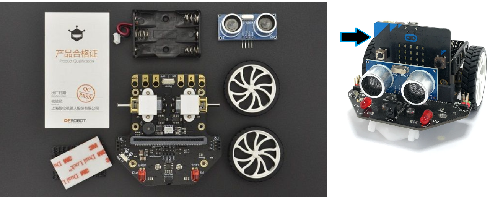
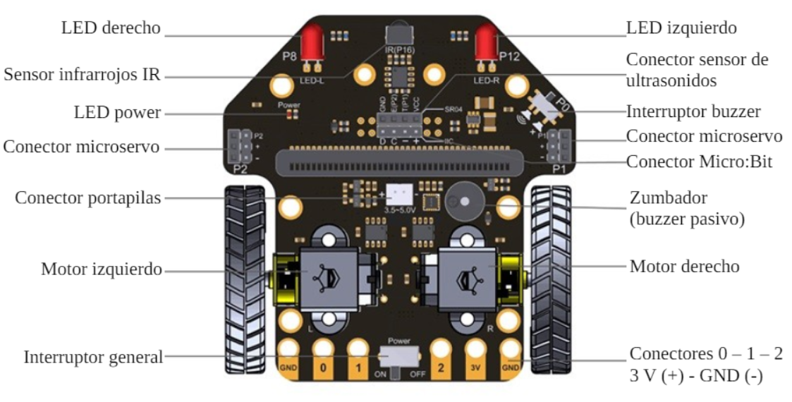
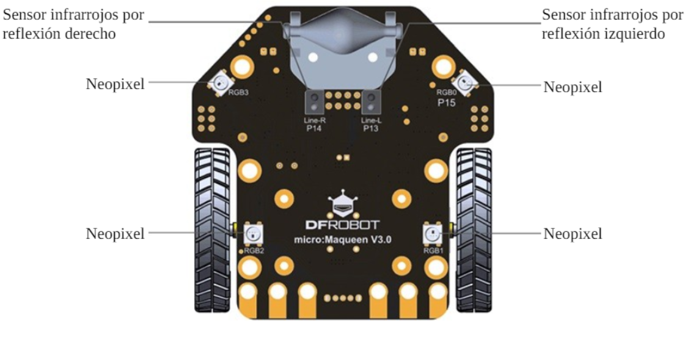

El robot Maqueen convierte la placa micro:bit en un robot móvil. Es fácil de montar y fácil de programar mediante los bloques de Makecode. Es compacto y resistente y tiene varios sensores y actuadores que nos permite ampliar las posibilidades de la placa micro:bit.
El robot dispone de un portapilas integrado para hacerlo más independiente. Una vez programada la placa, podemos desconectarla del cable USB y conectarla al robot Maqueen para que lo haga funcionar.

En las siguientes imágenes vemos todos los sensores y actuadores de los que dispone el robot Maqueen.

